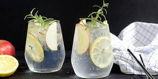

Gin and tonic

Gin and tonic, a pretty common drink now a days. At the moment the drink is cult in Denmark, and comes in lot of version
Recently i was not that surprised about gin and tonic, i felt it too much bitter, but then i tasted a more sweet version and now im sold to it
Ingredients
- 4 cubes ice
- 2 fluid ounces gin
- fluid ounces tonic water
- 1 tablespoon fresh lime juice
- 1 lime wedge
Directions
- Place the ice cubes in a tall, narrow glass with the ice coming near the top. Pour gin, tonic water, and lime juice over the ice. Stir well with a long-necked spoon. Garnish with lime wedge, and serve immediately.
Recipe borrow from Allrecipe.com
Home